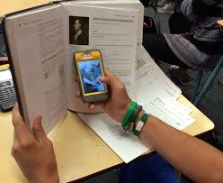

The inauguration of Abeka University, a new technical university located in Abeka, Fizi, in the Democratic Republic of Congo, marks a significant milestone in higher education within the region. This institution is dedicated to advancing technical skills and innovation, offering a wide range of technical courses that cater to the demands of modern industries.
One of the key highlights of Abeka University is its Computer Science department, which is positioned as a hub of development and innovation. With state-of-the-art facilities, expert faculty, and cutting-edge technologies, the university is committed to producing highly skilled graduates who can drive progress in fields like software development, cybersecurity, data science, and artificial intelligence. The university's curriculum is designed to meet the needs of both local and global industries, preparing students for the challenges of a rapidly changing technological landscape. As a result, Abeka University is set to become a beacon of technical education, empowering students to excel in technical fields and contribute to the economic development of the region and beyond. The inauguration event was filled with excitement and optimism, as local leaders, educators, and students gathered to celebrate the opening of this institution, which promises to shape the future of technical education in Fizi.
**Abeka University Inauguration at Abeka, Fizi (DR Congo)** The inauguration of **Abeka University** in Abeka, Fizi, Democratic Republic of Congo, is a major leap forward in technical education for the region. The university offers a broad range of specialized programs aimed at fostering development in key industries. In addition to its renowned **Computer Science department**, Abeka University offers courses in: - **Agriculture**, providing modern techniques and knowledge to enhance food production and sustainability. - **Automotive Engineering**, equipping students with the skills to innovate and excel in vehicle design and maintenance. - **Construction**, training future professionals in building infrastructure to meet the demands of urbanization. - **Carpentry**, focusing on woodworking and craftsmanship essential for both residential and commercial projects. - **Manufacturing**, preparing graduates to contribute to the growing industrial sector through advanced production techniques. The university is designed to address the pressing technical and vocational needs of the region, fostering a generation of skilled professionals ready to drive economic growth. The inauguration was attended by key leaders and stakeholders, all excited for the future impact of this new institution on both the local and national economy.
Teachers in many English classes across America are having students read fewer full-length books. The trend of reading long books in American schools seems to be declining as students gravitate toward shorter texts and digital media. Many educators are shifting their focus to shorter novels or excerpts to accommodate attention spans and packed curricula. However, the debate continues on the importance of long-form reading for deep comprehension and critical thinking skills.
Recently, the Associated Press explored the issue in education. It reports that students instead are given only short parts of books. Educators said this is because they believe current students have shorter attention spans than those of the past. The teachers might feel pressure to prepare students for state and nationwide examinations know as standardized tests. They also might believe that short pieces of writing will help students in the modern, digital world. The National Council of Teachers of English is a professional organization for teachers based in Champaign, Illinois. In 2022, the group released a statement about reading. “The time has come to decenter book reading and essay-writing as the pinnacles of English language arts education,” the group said. Seth French helped write the statement. He said the idea was not to remove books but to teach media literacy and have students read things in which they are interested. French taught an English class before becoming a dean at Bentonville High School in the state of Arkansas. He had students read plays, poetry and articles but only one book as a class. He said, “A lot of our students are not interested in some of these texts that they didn’t have a choice in.” Not everyone thinks English reading should involve only short, digital pieces of writing. Maryanne Wolf studies the human brain at UCLA in Southern California. Wolf said deep reading is important to strengthen connections in the brain tied to critical thinking skills, background knowledge and empathy. She said educators must give students a chance to learn through what she described as “immersion into the lives and thoughts of others.” Less reading There is not a lot of information on how many books American students are required to read in school. But in general, students are reading less. Federal data from last year shows 14 percent of young people said they read for fun every day. In 2012, that percentage was 27 percent. Some teachers say reduced reading has its roots in the COVID-19 crisis. Kristy Acevedo teaches English at a vocational high school in New Bedford, Massachusetts. “There was a trend, it happened when COVID hit, to stop reading full-length novels because students were in trauma; we were in a pandemic. The problem is we haven’t quite come back from that,” she said. Other teachers blame standardized testing and the influence of education technology. Some students struggle to read. Only one third of fourth and eighth graders reached reading proficiency in the 2022 National Assessment of Educational Progress. Leah van Belle is the director of the non-profit literacy coalition 313Reads in Detroit, Michigan. Van Belle said, when her son read the book Peter Pan in elementary school, it was too difficult for most children. She said her son’s school does not have a library. Still, she said it makes sense for English classes to use shorter reading material. “As an adult, if I want to learn about a topic and research it, be it personal or professional, I’m using interactive digital text to do that,” she said. Too many things to do Even in schools with many resources, time is always in short supply. Terri White teaches at South Windsor High School in Connecticut. White no longer assigns the book To Kill a Mockingbird to her class. She assigns about one third of the book and provides a synopsis, or a very short version, of the rest. White says the reason is that the class has to move quickly so she can teach all the required material. White also assigns less homework because students have sports and other activities. She said she wanted her class to be “more about helping student become stronger and more critical readers, writers and thinkers, while taking their social-emotional well-being into account.” The synopses method alone, however, can harm student critical thinking skills says Alden Jones, a literature professor at Emerson College in Boston, Massachusetts. Jones assigns fewer books than before but gives more small tests to make sure students are reading. “We don’t value the thinking time that we used to have. It’s all time we could be on our phone accomplishing tasks,” she said. Will Higgins is an English teacher at Dartmouth High School in Massachusetts. Higgins said he still believes in teaching the classics. But he said students do not have enough time, so teachers have cut back on the number of books they teach. “We haven’t given up on Jane Eyre and Pride and Prejudice. We haven’t given up on Hamlet or The Great Gatsby,” he said. But Higgins admitted giving up on assigning a long book like A Tale of Two Cities by Charles Dickens. I’m Mario Ritter, Jr. And I'm Caty Weaver.